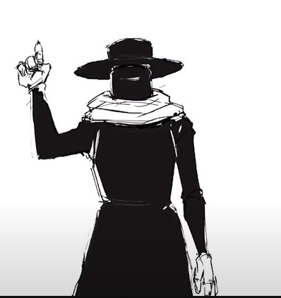

Lembra-ns
Joel Quinelato
Este é o arquivo pessoal dos meus três anos no Técnico em Informática: os desenhos que fiz, as pixel-arts que animei e as memórias que ficaram pelo caminho.
O acervo
três seçõesPrévia
.gif)



Um pouco sobre mim
quem escreve isso aquiEu sou o Joel, um estudante dedicado e apaixonado por conhecimento e artes. Nasci em uma madrugada fria de 11 de abril e, desde cedo, sempre fui curioso e interessado pelas ciências e tecnologia.
Sempre determinado a superar meus limites a cada dia, entrei no IFF pelo meu amor por tecnologia. Nesse site compartilho as diferentes experiências que tive ao longo dos três anos do curso Técnico em Informática no campus.
Um dos meus projetos mais ambiciosos foi um trabalho de programação em Java, utilizando conceitos básicos de point and click. Forest Guard Simulator coloca o jogador na pele de um guarda florestal que investiga o desaparecimento de um jovem chamado Scott Trevor, que após receber um e-mail desaparece na mesma floresta onde coincidentemente várias outras pessoas também desapareceram.
crtl+a
O desaparecimento de Trevor não foi apenas coincidência